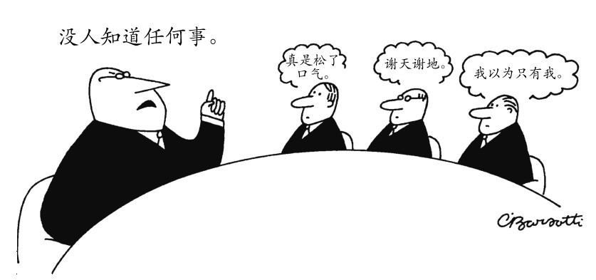

第二章
怀疑论
你能肯定吗？
设想一件你所知道的最不起眼也最容易验证的事实。譬如，你知道你现在是否穿着鞋，对吧？
然而，怀疑论者会请你三思。有没有可能你只是梦见自己正在读这本书？如果这只是一场梦，你也许正光着脚躺在床上；又或者是你穿戴整齐却在通勤的列车上睡着了。你也许会觉得自己现在不可能是在做梦，但你或许会想知道，如何能确定无疑地证明自己现在是清醒的呢？如何确定所有事情正是它们所展现的那样呢？也许你记得在什么地方读到过，只要掐自己一下就能从梦中醒来，但你所读到的材料是否值得信赖？或者它究竟是不是你所真正读到的东西，区别于你只是现在梦见自己曾经读到的东西？假如你无法确定地证明自己确实是醒着的，那你是否能“如其所是”的那样接纳自己的感觉经验呢？
一旦你开始对自己所知的东西有自我意识，即便是最简单最不起眼的所知事实，通常你觉得一眼就能检验出来的东西，你也会开始感到其实你并不真正知道它。那些你曾想当然地认为是证据的东西，突然变得很可疑，你会开始觉得确定性完全变得遥不可及。几个世纪以来，这种思维模式让许多哲学家都困扰不已，足以让人们深深地怀疑，究竟人类是否能有真正的知识。这些哲学家就是“怀疑论者”（sceptics），这个词来自古希腊语的“探究”或“反思性”。

图2 你知道什么？
怀疑论的历史根源
事实上，古希腊哲学就产生了两个怀疑论传统：学院派怀疑论和皮罗主义怀疑论。学院派的怀疑论者想要证明的结论是，知识本身是不可能的；皮罗主义怀疑论者则根本不想得出任何结论，而是要在所有问题上都悬搁判断，甚至包括知识的可能性问题。
学院派怀疑论取名自它诞生的研究机构：由柏拉图创立的雅典学园。这一运动的两大领袖同时也在领导着学园：一位是公元前3世纪的阿凯西劳斯，另一位则是百年之后的卡尼底斯。虽然他们的怀疑论思想与当时影响甚大的斯多葛学派知识论的观点相左，但直到今天，他们的怀疑论论证仍然在哲学上被认真地对待。他们的怀疑论论证之所以仍有效力，是因为他们所批评的斯多葛学派核心观点，仍然是许多其他知识论立场的题中之义，甚至也存在于我们对知识与信念区别的常识思考之中。
斯多葛学派的知识论主张区分印象与判断。这一派学者注意到，人们可以有印象而无判断。譬如说，我们看到沙漠中有水闪烁着微光，却并不断定实际的情况正如它显现的样子。判断是对某个印象的接受或拒斥；知识是明智的判断，或者说是对正确印象的接受。在斯多葛学派的观点中，当人们因为犯了某些错误而接受了错误的印象时，他们就没有知识。譬如，如果你断定有某个朋友正向你走来，而这只是基于你远远地、模模糊糊地瞥见有人正在走来，那么你所得到的印象就不清晰，你就有可能犯了错误。或者说，即便你是对的，你也只是碰运气蒙对的，而运气好蒙对了的东西并不能算作知识。明智的人会等到那位朋友再走近些，看清楚之后再做判断。所以，按照斯多葛学派的观点，要想获得知识，你所接受的那个印象必须足够清晰和准确，以至于你根本不可能出错才行。
学院派怀疑论者会非常乐于同意，知识仅仅在于接受那些不可能出错的印象，但他们也接着认识到，根本不存在这样的印象。想想看，难道只是等到那个朋友走近些就足够了吗？万一要是长得完全一样的双胞胎呢？真是那样的话，即便走得再近一些，你也仍然无法分辨。好了，如果你很确定这位朋友没有双胞胎兄弟或姐妹，但这也还是不够，因为你有可能是记错了，或是你在做梦、喝醉了，甚或是出现了幻觉。如果明智的人要等到排除所有这些可能，直到自己的印象绝不可能出错之后才接受它，那么恐怕他是要一直等下去了：即便是最鲜明生动的印象也有可能出错。所以，斯多葛学派学者论证说，既然印象总是可错的，那么知识就是不可能的。
人们也许会注意到，这一立场的内在一致性是成问题的：既然学院派学者主张我们不能建立任何的确定性，他们又怎么能在“知识的不可能性”上保持如此确定的态度呢？类似的理论焦虑引向了更深层次的怀疑论。要理解这种深层的怀疑论，我们就要来设想这样一种独特的思维模式：它只包含纯粹的怀疑，完全不做任何正面的、建设性的断言，甚至也不能断定知识的不可能性。皮罗主义怀疑论就力图采用这样一种更为彻底的进路。这一学派以埃利斯的皮罗（约公元前360—前270）命名。对于皮罗这个哲学家，我们只是从其他哲学家和历史学家的叙述中间接地有所了解，而不是从他自己写作的文本中知道的，因为他几乎没有什么著作流传下来。青年时代的皮罗就参加了亚历山大大帝对印度的远征，据说他非常喜欢接触到的印度哲学。远征回来以后，皮罗就开始吸引一些追随者，最终变得非常有名。他的家乡还因此给他塑像，并公告说生活在这里的所有哲学家都可以免税。今天我们之所以还能受到皮罗的影响，主要是来自他的仰慕者恩披里柯（约公元160—210）的著作。正是他从一些古代思想资源中阐发出了怀疑论的观念，也就是今天被称作皮罗主义的怀疑论。
不论是学院派怀疑论还是皮罗主义怀疑论，两派共同关心的是“真理的标准”问题，或者说我们应该以何种准则来判别所要接受的东西，毕竟知识就要求我们不能随意地接受任何判断。不同的哲学家提出了许多不同的准则，以判别哪些才是值得接受的、最好的印象。既然知识要求我们做出深思熟虑的选择，我们也就不能随机地选择真理的标准。但要避免这种随意性，我们在选择真理的标准时就又需要某些准则。我们是否会用自己所偏爱的标准来为自身辩护？那看起来就像循环论证了。但如果我们寻找某个新的准则来支持我们的标准，那么我们就又需要更进一步的原则来为这个新的准则辩护，于是这就陷入了无穷后退。
皮罗主义者很喜欢把人们的注意力引向真理标准问题的上述疑难，但并不做任何肯定的主张说它永远得不到解决。在意识到上述困难之后，他们所采取的办法是普遍地悬搁判断。皮罗主义者发展出了一种普遍的策略，以便在所有主题上都产生怀疑：每当你试图在某一主题上做出决定时，你就想想这一决定的反面。你所应该做的并不是在这一主题上做出这样或那样的决定（那就会是“独断论”的立场），而只需要继续收集进一步的证据，在你的心目中使问题两方面的答案保持平衡。为了保持相反观点的平衡，有很多可以采用的技术。譬如，你可以设想一下，假如是在其他动物看来，或是从其他视角来看，又或在不同的文化中，事情会变得多么不一样。恩披里柯利用先前怀疑论者的工作，发展出一个扩充了的目录，其中详尽列举了各种能使你避免对给定问题做出具体回答的方法。他甚至还给出了一个用语的清单，全是怀疑论者会对自己说的话（“我不决定任何事情”；“或许是这样，或许不是”）。但恩披里柯并不是要把这些用语变成他自己教条的表达：他的怀疑论与其说是对实在的理论主张，倒不如说是一种实践或生活方式。对所有问题保持开放或许听起来会更让人焦虑，但足以使人好奇的是，恩披里柯却报告说，他的印象是怀疑论实践给他带来了心灵上的宁静平和。（这当然只是一种印象——他不会确定地说自己达到了心灵上真实的宁静，也不会确定这是怀疑论所导致的，而不是随机的结果。）
怀疑论所面对的一种早已有之的批评，就是说它对人类的生存而言会是个问题：假如怀疑论者在“吃饭会不会解饿”这样的问题上都悬搁判断，那他们岂不是要面临饿死的风险？皮罗主义者回应说，行为的向导可以是本能、习惯或风俗，而不必是判断或知识：怀疑论者所要反对的是认知上的教条，他们并不需要反对自己的本能冲动或不自觉地产生的印象。怀疑论者当然可以放任地满足自己的饥渴之欲，但仍然不做任何关于实在的判断。
然而，“拒斥所有判断”并不是一种容易得到支持的怀疑论进路。在整个中世纪，西方哲学中具有主导作用的人物基本都是坚定的非怀疑论者。但在印度哲学传统中，怀疑论却得到了丰富和发展。其中，特别著名的是11世纪的印度哲学家室利曷沙的著作《驳论的妙诀》，它教给读者某些令人叹为观止的论证技术，以驳斥做出任何正面主张的理论，而不管这些理论的具体主张是什么。室利曷沙向他的读者承诺，只要运用这些怀疑的方法，特别是关注我们所用术语定义方面的困难，那么就能在论证中享受到“攻无不克的愉悦”。与古希腊人一样，室利曷沙也强调事物表象的欺骗性，因此我们的力量不足以发现事物的真实本性。他看起来也与恩披里柯一样，希望通过拒斥任何获取知识的积极努力，以便得到心灵的宁静平和。
对知识可能性的彻底怀疑在接下来的几个世纪中时常浮现，特别是在人类智识方面经历剧变的时期。例如，16世纪正是新科学的成就挑战中世纪世界观的时代，那时的欧洲就出现了怀疑论的复兴。恩披里柯的著作被重新发现，他的论证得到一些哲学家的热情追捧，其中就有蒙田（1533—1592），他的个人箴言“我知道什么？”就表达了对皮罗式怀疑的热情。这种怀疑论的氛围不断蔓延开来：到17世纪早期，勒内·笛卡尔（1596—1650）写道，怀疑论远远不是一个已经消亡了的古代观点，而“在今天正生机勃勃”。《第一哲学的沉思》是笛卡尔最著名的著作，其中除了一些关于梦境和幻觉的令人耳熟能详的古代怀疑论论证之外，还对理性的局限性提出了一些全新的怀疑论论证。笛卡尔最深刻的怀疑论论述是，设想一个你被强大的恶魔欺骗的情境：那个恶魔在任何方面都致力于欺骗你，不仅给你输送虚幻的感官印象，而且即便是在你做简单的数学计算等抽象判断时，它也会让你的思维陷入歧路。如此鲜活生动的图景常常萦绕在哲学想象中挥之不去，尽管笛卡尔本人认为我们拥有摆脱它的确定方法。笛卡尔自己并不是怀疑论者，虽然他以其杰出的才能提出了不少怀疑论论证，他的真实目的却是要无懈可击地证明怀疑论是错的。但他对解决怀疑论问题的这份乐观并没有得到广泛的认同，近代早期的主要思想家仍然在坚持不懈地与怀疑论作斗争。第三章会更详细地考察笛卡尔及其论战对手的观点，在其知识实证理论的语境中理解他们如何处理怀疑论。
旧问题的新回应
20世纪以来，怀疑论的老问题出人意料地获得了某些全新的回应。英国哲学家G.E.摩尔在1939年的一次公开演讲中提出了一个特别简单的方案。摩尔只是举起了他的手，然后说“这是一只手，而这是另一只”，以此来回答“如何证明外部世界的实在性”问题。他解释说，他的这两只手就是外部世界的对象，因此逻辑上就可以得出结论：外部对象是真实存在的。摩尔认为这是完全令人满意的证明：大前提是他有手，小前提是他的手是外部对象，或者用他的话说是“空间中能碰到的东西”，那么显然就能得出外部对象存在的结论。怀疑论者当然还会抱怨说，摩尔并不真的知道他有手——但也恰恰是在这里，摩尔提出应该把论证的负担甩给怀疑论者的一方。“如果你要说我并不真的知道，只是相信有手的存在，而实际上可能并没有手，这该是多么荒谬的事情！”摩尔坚持认为他知道自己有手，但并不试图去证明自己是对的。在揭露了怀疑论焦虑的荒谬性后，摩尔意在解释他不去证明自己有手的理由，也就是解释为什么我们应该认为他在这一点上拥有真正的知识。
首先，摩尔评论说，他主张无须证明而知道自己有手，并不等于主张任何人都永远不能证明他有手。事实上，他很乐意承认，在某些特殊情况下，人们或许能合理地证明自己有手。譬如，假如有人怀疑你是截肢患者，所佩戴的不过是人造的义肢，但实际上你并不是这样的，那么你就需要让他来仔细检查你的手，以便驱散他的怀疑。如果十分热切地想要证明这一点，你甚至可以让他感受一下你的脉搏，或是用某个尖锐的物体扎一下你的手。但是，不论这些旨在打消义肢疑虑的策略多么有效，摩尔还是认为，不可能有什么能够证明你的手存在的全能策略，就好像能够提供一个普遍的证明，以便能够打消所有可能的疑虑那样。因为可能产生疑虑的范围实在是太大了。举一个很简单的例子来说。假如有这样的打消所有可能疑虑的普遍证明，那么它就首先要证明，你不是一个睡着的截肢患者，在某次失去手臂的事故之后正躺在医院里做梦。尽管这种情况看上去令人难以置信，但我们是否能够证明这种情况并没有真的发生呢？对此问题摩尔依然持悲观的态度。然而，摩尔认为知道自己有手并不需要能够证明这一点，所以他也认为，即便你不能证明自己现在正在做梦，这也并不会阻止你知道自己并没有在做梦。在这里，摩尔再一次延续了对自己拥有知识的信心，尽管他也承认了在证明的能力上存在诸多制约：“我在断定自己不是在做梦这方面无疑具有确凿的理由；我有确定无疑的自己是清醒的证据，但这并不等于说我有能力证明它。我没法告诉你我所有的证据，但为了给你一个证明，我至少应该要求做到这一点。”
既然摩尔主张有确凿的证据相信自己的清醒，他就拒斥了怀疑论推理所假设的力量。怀疑论者会说，假如你是在做梦的话，你就不可能通过看到两只手而知道你有手。对于这一点，摩尔事实上是赞同的，但他所要提醒我们的是，怀疑论的所有论证都落在那个大大的“假如”上：正如摩尔所言，对于那些知道自己并没有在做梦的人来说，无论他是否能证明自己没在做梦，他都不应该被怀疑论的焦虑所困扰。
然而，宣称自己可以有知识而无须证明的策略或许也在某些方面敲响了警钟：摩尔是否拒绝与怀疑论者斗争而径自宣布了胜利？摩尔愿意构建他所认为的“外部对象的存在”这一论断的绝好证明，却根本拒绝证明另一个类似的断言：“那些手是存在的。”这难道不也看起来有些奇怪吗？更何况这两个断言原本就有着重要的差异：前者是哲学上的一般判断，后者却是日常意义上的个别判断。如果我们要支持某些普遍的哲学判断，显然就必须经过公开的推理与证明：譬如，我们对“外部对象”的意义可能就需要相当长的推理论证过程，而事实上摩尔在讲演中也的确在这方面做了大量细致的讨论。与此相比，像“这是一只手”这样的判断是如此基本，很难说还有什么更简单、更容易获知的判断来支持它。（数学上也有类似的例子，某些基本的判断被当作公理而不再需要进一步的证明。）如果怀疑论者试图颠覆这些基本判断的确定性，那么摩尔会建议我们，在放弃对原初常识的信任以前，我们首先不应该相信的反倒是怀疑论者臆想性的哲学推理。假如有人声称知道某个充满争议的哲学观点，却不能够证明它，那我们当然会合乎情理地怀疑他；但假如他声称的是知道当下环境中的某个简单的可观察事实，那我们也不应过多地反驳。
有的哲学家接受了摩尔的观点，认为怀疑论的论证中的确有某些错误之处；但即便是这些哲学家也不满意摩尔的解决方案，特别是他固执地坚持知识的常识观点。他们中的有些人就试图更精确地捕捉怀疑论的错误，同时也为知识的常识主张提供积极的辩护。摩尔的剑桥大学同事伯特兰·罗素就提供了一种主要的回应策略。罗素承认，怀疑论者说的有一点是对的：我们所有的印象（或用罗素的话说是“感觉材料”）都来源于不同于我们通常置身其中的实在世界的某种事物，这在逻辑上是可能的。但罗素对付怀疑论的策略是“最佳解释推理”，也就是即便我们承认这种逻辑上的可能性，也依然能够与怀疑论作斗争。因为他论证说，承认其逻辑上的可能性，并不意味着我们不能合理地排除它，这二者之间有着巨大的间隙：在逻辑规则之外，我们还有更为狭义的合理性原则。具体说来，罗素所用到的就是简单性原则：在其余情况均同的前提下，简单的解释要比复杂的解释更合理。从逻辑上说，你通常归之于你的宠物猫的那些感觉材料——譬如喵喵叫的声音、猫毛的外观和质感等等——的确可能并不真的来自那只猫。或许它们来自一系列不同的动物，或是来自一系列令人费解的一致的梦境，又或是有其他诡异的来源。但在罗素看来，最简单的假设莫过于你通常会相信的那个：的确存在着这样一只猫，你跟它的定期互动让你产生了像猫的那些印象，萦绕在你的私人经验之中。对科学家而言，最合理的解释数据模式的方法，莫过于诉诸简单的定律；同样地，对我们来说，最合理的解释日常经验模式的方式，也莫过于承认一个有持存对象的简单世界，即“实在世界”的假设。
罗素的方案自然有它的吸引力，但也存在一些问题。因为，即便我们承认最佳解释推理是合理的策略，我们也依然会觉得它不够充分，因为它还是没有说明为什么我们由此得到的就是知识，而不只是合理的信念。把这一推理方式应用在其他语境中就会暴露出其潜在的弱点。例如，侦探在调查某项犯罪案件时也可以使用最佳解释推理。假设他发现管家的鞋子上有与案发现场相符的泥土，女仆的证词表明管家一直怨恨被害人，并且又在管家的床底下发现了一把有血迹的刀，那么侦探就能很合乎情理地得出结论：对这些证据的最佳解释就是管家实施了谋杀。然而，怀疑论者会指出，事情也许并不像表面上看到的那样。也许女仆才是凶手，而她只是非常巧妙地构陷了无辜的管家。这不是最简单的解释，但也许是真实的解释。假设侦探没有找到任何证明女仆卷入其中的证据，或许管家有罪就是最合理的结论，但并不能由此就说管家事实上的确犯了罪。同样地，怀疑论者也可以指出，尽管我们的经验很可能源自外部对象，或者说甚至我们也的确有理由相信是这样，但这仍然不等于说，这样的经验让我们获得了知识：在怀疑论者看来，知识需要满足比合理信念更高的标准。
罗素方案的更大麻烦在于，对我们的经验来说，实在世界的假设并不见得就比怀疑论者的解释更好。因为怀疑论者会论证说，假设欺骗性的恶魔存在，那么就能很巧妙地解释罗素所关心的那些经验特征。恶魔当然会给我们源源不断地输送生动而连贯的经验，因为恶魔一直努力欺骗我们，让我们相信存在着外部对象的世界。这种反驳也可以用在其他类型的怀疑论假设上。如果有人不喜欢恶魔假设中的超自然色彩，我们也可以替换成现代科学版本的怀疑论假设：只需假设你的大脑离开了身体而与一台超级计算机相连，这台计算机模拟某个连贯实在的经验，不断地给你输送感觉经验的信号；只要计算机的程序设计得足够好，能一直保持连贯性，并随着你的运动控制信号来调整显示的信息——譬如，如果你决定向左看，那么你的视觉经验也会随之而改变——那么，你作为一个钵中之脑而获得的经验，就与别人在物理环境中获得的经验，很可能仅从经验者的内在视角完全无法区分。所有你认为自己看到、感觉到的东西，譬如蓝蓝的天空、温暖的阳光，都可能是由那台超级计算机模拟出来的虚拟现实的一部分。假设这整个模拟的目标就是给你输送感觉经验，使之完全对应于你通常在物理世界中获得的感觉经验，那么，对最佳解释推理的支持者来说，还有什么理由认为实在世界的假设比钵中之脑的假设能更好地解释经验呢？这就是一个很有挑战性的问题了。而为了回应这一挑战，人们也提出了种种方案。譬如，美国哲学家乔纳森·沃格尔就论证说，实在世界的假设仍然是对经验更好的解释，因为它所需要的基本空间结构，较之于钵中之脑在实在世界中的虚拟现实的空间结构，要简单得多。
即便沃格尔是对的，这也不过是说，与其说我们是钵中之脑，倒不如说我们就生活在真实的世界中才更合理。但我们还是渴望一种更有力的方式来回击怀疑论。譬如说，有没有可能证明怀疑论论证中潜藏着巨大的困难？或者说证明怀疑论者在主张某些不仅不合理，而且更是完全错误的东西？近来，有的哲学家就试图采用语言哲学的工具，以这种更有攻击性的方式反驳怀疑论。这种新的反驳就是“语义学进路”，其背后的理论动机在于，通过考察语词获得意义及其与实在关联的方式，我们就能找到向怀疑论者开火的弹药。具体说来，这些以语言哲学构造的反怀疑论论证都出自语义外在论的思潮，这一思潮可以一直追溯到1960年代至1970年代的马库斯、克里普克和普特南。
语义外在论的主要观点是，语词之所以具有意义，并不是由于说话者将其关联到心理上的意象或描述（这被称作“语义内在论”观点），而是由于我们与周边世界的事物存在着因果联系。例如，在莎士比亚的时代，人们还把水看作一种基本元素；现代的科学家却用化合物H2O来刻画它。即便“水是什么？”的问题在莎士比亚、现代科学家和街边的普通人那里得到的答案完全不同，他们却无疑都是在与同一种物质打交道。语义外在论者主张，之所以我们能够用“水”这个词指称同一种物质，正是因为这一语词的使用就建立在对这一具体物质的因果关联上。既然莎士比亚和现代科学家所看到和尝到的都是同一种液体，那么不管他们对这种液体的本质有何不同的认识，在使用“水”这个词时他们还是在指同一种东西。有时，相关的因果链条还需要经由其他说话者传递过来。譬如，今天没有谁见过那位法国皇帝拿破仑，但我们仍然可以谈论拿破仑，就是因为我们能够从其他来源那里获得“拿破仑”这个词的指称，当然还要再经由正确的因果链条才进一步回溯到那个历史上的拿破仑本人。因此，说话者可以对某件事情持有不同的甚或相反的观念，却依然能够谈论同一件事情，这在语义外在论的框架中就非常容易解释。例如，吉尔说拿破仑个子矮，比尔说拿破仑实际上还算当时中等偏上的个头，还知道所谓他小个子的谣言乃是出自其英国敌人之口，那么，他们关于拿破仑这个人的心理形象是很不一样的，但这并不妨碍他们所谈论的都是同一个人。
以语义外在论对怀疑论做出的著名回应，出自普特南1981年的著作《理性、真理与历史》。在这本书中，普特南批评的怀疑论者试图论证说我们可能只是钵中之脑。而普特南论证说，“我现在是钵中之脑”这句话，对于任何理解这句话意义的人来说都不会为真。按照他的理解，如果有这样一种生物，它所获得的所有信息都不过是来自虚拟现实装置的电信号刺激，那么它就不可能在与我们相同的意义上使用“钵”这个词。既然这种生物只与钵的仿真影像打交道，那么它所说的“钵”就不可能指称任何在这种仿真装置之外的物理世界的存在物。而我们对语词意义的把握却是在这种仿真装置之外，植根于我们和现实世界的“钵”打交道的历史经验。因此，我们之所以能够理解怀疑论者的假设，恰恰表明了我们正是生活于真实的世界之中：如果你实际上已经理解了“钵”是什么，那么你就不可能从来都是钵中之脑。
普特南的上述论证立刻引发了新的反弹。有的人就说，这只是深化了怀疑论的问题：现在我们应该担心的是，也许语词并不具有我们原来以为它们具有的那些意义。也有人注意到，即便普特南能证明，一个人如果总是钵中之脑的话就不可能谈论真实的“钵”，因为他从未有过与真实的“钵”打交道的经历，但普特南对于一个全新的钵中之脑依然束手无策。怀疑论者不只是主张你现在和过去一直是钵中之脑，有创造力的怀疑论者可以让你怀疑自己是不是从昨天半夜开始刚刚成为钵中之脑：你可以假设自己的生活直到昨天半夜之前都很正常，然后你在睡梦之中被一个疯狂的科学家窃取了大脑，使之与一台超级计算机相连接，进而模拟出一个虚拟的世界，还特别像直到昨天晚上之前你一直生活于其中的真实世界。假设这是一个非常完美的模拟，你当下的任何经验都无法排除它。那么，对普特南而言，非常不幸的是，语义外在论观点也必须承认你所说的“钵”这个词仍是有意义的，它的意义就来源于你先前在真实的世界中获得的对“钵”的过往经验。这个“晚近的钵”的图景仍可以意味着，所有当下的感觉经验都可能是幻觉（你以为外面是蓝天白云，实际上却是乌云密布，风雨交加，诸如此类），而这就是怀疑论者所喜闻乐见的恼人结论。
1999年的科幻电影《黑客帝国》把这个问题戏剧性地推向了更广大的受众。影片的主人公，由基努·里维斯扮演的“尼奥”发现，他作为一个1990年代办公室职员的生活只不过是虚拟的幻觉：真实的情况是，时间是两个世纪以后，人类已经在与人工智能控制的机器的战争中败下阵来。这些机器将人类困锁在吊舱里，用大量同步的虚拟现实（“母体”）来给人以综合性的经验。尼奥发现了程序中的某些漏洞，在一些勇于反抗机器的人类的帮助下，他最终找到了逃脱虚拟现实控制的途径。此时他面临着两个选项：要么是在虚拟现实中继续过办公室职员的舒适生活，要么就是从母体中挣脱，参与反抗机器的地下运动。影片将这一选择的时刻戏剧化地处理为是吃红色药片（意味着母体之外的危险现实）还是吃蓝色药片（继续母体之中的舒适生活）的抉择。作为影片的主角，尼奥幸运地选中了红色药片。但令人迷惑不解的是，究竟是什么东西在此时利害攸关。经历一个真实的物理对象的世界，为什么就一定比沉浸于计算机模拟的图景中更好呢？
或许并不会更好。哲学家戴维·查尔莫斯坚决地为这样一种匪夷所思的观点辩护，他主张钵中之脑实际上要比我们所想象的好得多。具体说来，查尔莫斯试图证明，钵中之脑对其所处环境的日常信念也为真：例如，如果超级计算机让钵中之脑“看到”一本书，它因此会对自己说“我手里正拿着这本小书”，这里实际上并不存在任何欺骗或错误。巧妙的地方在于，对钵中之脑来说，它的语词和思想并不指称物理对象，而是指称由基本的计算属性所构成的对象。查尔莫斯也采纳了语义外在论的观点，将语词的意义与经验的原因联系起来。在这一前提下，钵中之脑所谈论的“这本小书”或“我的手”，实际上指的就是超级计算机中的子程序，以负责模拟对那些白纸和抓紧手指的相关感觉。这意味着，一个钵中之脑根据其经验的本质，可以正确地说它拿着那本书——因为，超级计算机中负责模拟对书的经验的那部分程序，的确与负责模拟手的经验的那部分程序关联着，而且这种关联是以对钵中之脑来说是“拿着”的方式，这也是唯一一种钵中之脑所知道的“拿着”。从我们非钵中之脑的角度来说，我们当然会认为那个钵中之脑只不过是虚拟地拿着一本虚拟的书；但从钵中之脑自身的视角来看，它有理由认为自己正拿着一本书——它的语词具有与环境相适应的意义，且根据这些意义，钵中之脑所相信的东西是真的。实际上，没有什么东西能够阻止这个钵中之脑知道它正拿着一本（它认为的）书。因此，这个“怀疑论情景”并不会对我们日常生活的知识构成什么威胁。
按照这个思路，尽管虚拟现实从性质上看完全是计算的，但它并不会因此就不如那些由亚原子层次的基本粒子构成的物理实在。我们如果发现自己竟然是生活在这样的虚拟现实中，或许会让人惊讶，但如果查尔莫斯是对的，那么这种发现也不过是像发现量子力学或弦理论为真那样：一旦听闻物质的终极本性并不像我们所想象的那般，或许会暂时地让我们坐立不安，但它不应该动摇我们对普通知识的信心，譬如说我们关于鞋子、手或书的知识。（你当然会关心鞋子是否湿了或者穿着不舒服了，但你真的会关心鞋子最终是由什么东西组成的吗？譬如说究竟是由基本粒子，还是由某些振动着的一维对象，抑或是某个计算机程序指令构成的？查尔莫斯认为，答案很可能是否定的。）
怀疑论者原想用钵中之脑的图景恐吓我们，使我们相信并没有什么知识：“你甚至无法排除这样一种可能性：你的大部分信念都是假的。”与摩尔不同，查尔莫斯在这一点上同意怀疑论者：钵中之脑的图景的确无法排除，但他并不认为在此情形下大部分信念就都是假的。然而，我们还可能会为这一怀疑论图景的某些变体深感头痛。像普特南一样，查尔莫斯也面临着这样的困难：如果主体是刚刚才沉浸在虚拟现实中的，那又该如何？在这一变体的怀疑论图景中，人们先前知道什么是从物理意义上“拿着”一本非虚拟的书。又由于他们所使用的语词意义就来源于其先前的经验，所以当他们刚刚被连接到超级计算机上，获得了对某个虚拟书籍的虚拟现实经验时，他们所说的话就会是假的：当这个新整合的钵中之脑说“我正拿着一本书”时，它所意指的是一本真实的、由基本粒子组成的书，所以它所说的话必定为假，也就不可能有知识。查尔莫斯非常清楚其中的困难，但他试图弱化其影响，办法就是指出那个新整合的钵中之脑仍然残存着它先前获得的知识。如果查尔莫斯是正确的，怀疑论者根本不可能轻易地构造一个全方位否定知识可能性的图景，即不可能证明几乎所有关于过去、现在和未来的信念都是假的。当然，顽强的怀疑论者还可以指出，否定知识可能性的目标只需通过一个温和的图景就可以实现，在其中你只是（例如）对当下感知的所有对象的判断都是错的。如果你刚刚被连接到一台超级计算机上，而它又不断地模拟着你的经验，那么即便是查尔莫斯也得承认说，你不可能知道自己是否正穿着鞋子。同时，你还可能继续持有下述疑虑：如果不能排除这一图景，那么你就不能主张说自己已经知道了某个事实，无论你是否身处虚拟现实之中。
那么，我们是否不可能从一开始就拒斥怀疑论？这或许是一个试图攻击怀疑论推理的非常有野心的计划。与此相反的是，有的哲学家主张某种更具防御性的进路。按照他们的观点，我们不要试图用怀疑论者的词汇来回答他们提出的问题，而是要努力从一开始就超出怀疑论者所能掌控的范围。既然怀疑论者的目的是质疑所有你所说的话，那么也就不可能在你和他之间找到一个共同的基础，并且还能在这个共同的基础上说服他相信自己错了。如果从怀疑论者所接受的前提入手，你就只会作茧自缚，还很难从他挖的坑里跳出来；而如果选择从常识的世界观出发，我们就很容易构建某些防御性的机制，以抵御怀疑论的魔咒，同时接受常识上的假设，即我们的确拥有很多知识。
一种拒斥怀疑论的方法是，对怀疑论观点的吸引力提出一种诊断：既然这样的观点会引向非常陌生乃至荒谬的结论，那么为什么它还让人那么趋之若鹜呢？在这方面，哲学家们提出了五花八门的观点。来自牛津的哲学家蒂莫西·威廉姆森提出，怀疑论尽管有着令人失望的结论，但它之所以一开始看起来很吸引人，是因为它本来是个好东西，只不过走得有点太过了。其中好的部分在于，它说明我们具备一种有益的批判性能力，以对自己所相信的东西做“再确认”（double-check），这就要暂时悬搁对它们的判断，以便看清楚它们是否与我们所知的其他东西相吻合。但这种悬搁个别信念的能力只是作为一种有用的免疫系统，以便清除那些不一致的或无根据的观念；而怀疑论则不然，毋宁说它是自身免疫性疾病，因为它的保护性机制太过了，以至于机体的健康部分也遭到了袭击。一旦我们悬搁了太多的东西——譬如说，一旦我们连整个外部世界的实在性都要怀疑——那么我们也就无从支持或再确认我们所相信的完全合理的东西。
还有一些其他因素也可能导向怀疑论。或许是由于知识的基本模型中存在某些错误，这就构成了怀疑论论证的基本背景。按照这个得自斯多葛学派的模型，我们是从印象（或观念、感觉材料等）出发，然后才有一个接受或拒绝这些印象的环节。如果现实生活中被广为接受的印象与梦境或模拟仿真的效果并无差异，在我们看来完全一样，那么似乎就很难说清楚，我们究竟是怎样辨别出哪些是应该接受的东西的。在早期近代哲学中，这个问题表现得尤为突出。